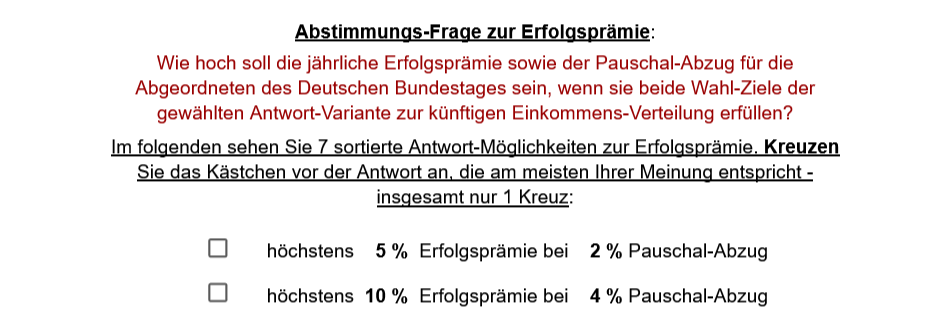

A. Worum es geht
In vielen Ländern, auch in demokratischen, vollzog sich seit Ende der 70er Jahre eine von der Bevölkerung womöglich nur in Teilen gewollte Umverteilung der Nettoeinkommen von Arm zu Reich. Ein Beispiel dafür ist Schweden, aber auch in Deutschland fand insbesondere nach der Jahrtausendwende eine spürbare Verschiebung hin zu den (Einkommens-)Reichsten der Gesellschaft statt (Kap.B).
Das scheint inzwischen keine rein soziale Frage mehr zu sein. Bei Auswertungen auf Basis von Daten des Statistischen Bundesamtes zeigt sich, dass von einer Umverteilung hin zu mehr Einkommens-Gleichheit heute gut 2/3 der Bevölkerung, also auch die mittleren bis gehobenen Einkommen finanziell profitieren würden (Kap.B) - von mehr Vermögens-Gleichheit ganz zu schweigen.
Es fragt sich, ob diese Entwicklung von einem Großteil der Gesellschaft mitgetragen wird, oder ob es sich eher um eine schleichende, überwiegend ungewollte Entwicklung handelt?
- Wie könnte die wahlberechtigte Bevölkerung zu diesem Thema befragt werden?
- Wie könnte eine Tantiemenregelung für die Abgeordneten des Deutschen Bundestags aussehen, wenn sie die Ergebnisse von Volksabstimmungen1 in erfolgreiche Politik umsetzen?
- Und wäre es denkbar, dass die Bevölkerung über solche Tantiemenregelungen gleich mit abstimmt?
Wünschenswert wäre, wenn schon im Grundgesetz eindeutige Regelungen über die Durchführung, Regelmäßigkeit und Verbindlichkeit von Abstimmungen zu kurz-, mittel- und langfristigen Zukunftsfragen existierten. Vielleicht könnten solche Referenden und Initiativen auch helfen, das Vertrauen der BürgerInnen in die demokratische Gestaltungsfähigkeit von Gesellschaft und Staat wieder zu beleben.
Im folgenden wird ein Entwurf vorgestellt und diskutiert, wie eine vielleicht auch regelmäßig stattfindende Abstimmung zum Thema 'Zukünftige Einkommens-Verteilung' aussehen könnte. Die Faktenlage zur Information der Wahlberechtigten wird nur exemplarisch dargestellt. In der Praxis sollte sich die Bürgerinformation im Vorfeld solcher Befragungen am Vorgehen in der Schweiz orientieren. Dort wird allen Wahlberechtigten Wochen vor jeder Befragung ein offizielles 'Büchlein' mit den eigenverantwortlichen Stellungnahmen der Träger öffentlicher Belange (wie Parteien, Gewerkschaften, Arbeitgeber-, Sozialverbänden etc.) zur Orientierung zugesandt.
B. Einkommensverteilung nach 1995
Von 1995 bis 2023 ist das 2Einkommen* der in Deutschland lebenden Bevölkerung im Schnitt um 22,4% gestiegen (0,73% pro Jahr) - nach Abzug der Inflation. Für die erste Person eines Haushalts 3(1. Pers.eH) wuchs es, mit zum Teil großen 4Schwankungen, 5in etwa um stattliche 461,- € netto im Monat (eigene Berechnungen5, 6).
Jedoch konnte in den 28 Jahren nur die obere Einkommenshälfte halbwegs durchschnittliche Nettoeinkommens-Steigerungen erzielen. Allein das Zehntel der Höchstverdiener erreichte extrem überdurchschnittliche Steigerungen um bisher 37,5%:

Bevölkerungs-Zehntel, sortiert nach Einkommens-Reichtum - je reicher, desto mehr Einkommens-Zuwachs über die Jahrzehnte hinweg - sogar prozentual (eig. Berechnungen 5, 6)
So ist die sehr viel schlechtere Einkommens-Entwicklung der Einkommens-ärmeren Hälfte der Bevölkerung ausschließlich dem Einkommens-reichsten Zehntel zugute gekommen. Und innerhalb des Einkommens-reichsten Zehntels hat das obere 1% den mit Abstand größten Zuwachs erreicht (hier nicht zu sehen).
Die Schere zwischen Arm und Reich (bzw. Reich und dem ganzen Rest) ging über die Jahrzehnte spürbar auseinander. Das gesamte Nettoäquivalenz-Einkommen der Bevölkerung hat sich seit 1995 wie folgt auf die 10 Zehntel der Bevölkerung verteilt:

°Gini-Koeffizient: Das klassische Ungleichheitsmaß. Je höher dieser Wert, desto ungleicher die Verteilung der Einkommen* in der Bevölkerung. Zwischen 1995 und 2021 stieg die Ungleichheit anhand von jeweils 10 Einzelwerten7 von 0,249 auf 0,302 (eig. Berechnung). Bis 2023 sank sie wieder spürbar. Das lag neben gezielter Sozialpolitik auch am starken Wirtschaftseinbruch nach den Corona/Ukraine-Entwicklungen der letzten Jahre. Gini alleine eignet sich aber nicht zur Beurteilung von Sozialpolitik, weil sich bei ihm die unteren Einkommen gegenüber den mittleren bis oberen weniger auswirken. Deshalb soll hier auch das Verhältnis (o60-10)/u20pp betrachtet werden:
°°Verhältnis (o60-10)/u20pp: Der Indikator gibt an, um wieviel das Einkommen der oberen 60minus10% der Bevölkerung pro Person das der unteren 20% übersteigt. (Die oberen 10% werden hier bei rückwirkenden Vergleichen nicht berücksichtigt, weil deren Einkommen durch die Konjunkturlage zu sehr schwankt8 und den Wert des Indikators als Sozialmaß schmälern würde. Bei Zukunfts-Vergleichen werden auch die oberen 10% einbezogen - als o60/u20pp. Die Eink.-Anteile des 1. und 2. Zehntels wirken sich etwa doppelt so stark auf den Indikator aus, wie die des 3. und 4.) 1995 waren die Nettoeinkommen* der Eink.-reichsten 60-10% pro Person noch 2,25 mal so hoch, wie die der Eink.-ärmsten 20%. Bis 2021 stieg dieser Wert auf 2,66 - sank dann aber durch gezielte Sozialpolitik wieder auf 2,45 - etwa den Stand von 2005.
Dennoch dürfte sich die reale Einkommens-Situation der unteren Zehntel seit 2005 deutlich verschlechtert haben, weil bei der offiziellen Inflations-Berechnung die massiven und gerade für untere Einkommen überproportionalen Mietsteigerungen nach 2005 nicht entsprechend berücksichtigt werden.9
C. Wahl-Frage zur künftigen Einkommensverteilung
Betrachtet man Legislaturperioden der vergangenen Jahrzehnte, in denen sich die Gleichheit und Sozialgerichtetheit der Einkommensverteilung in Deutschland deutlich verändert hat, betrug die Änderung des Gini-Koeffizienten etwa 0,03. Diese Beobachtung mündet hier in ein universelles Vorgehen, um für die Gleichheit und Sozialgerichtetheit von Abstimmungs-Varianten dieser Art objektiv begründbare Wahl-Ziele benennen zu können.10 Ausgangspunkte zur Berechnung (Interpolation) der Varianten sind hier der StatusQuo (2023) sowie der "30"-Jahres-Trend (1995-2023).
Zur Frage der künftigen Einkommens*-Verteilung sehen Sie im folgenden 7 inhaltlich sortierte Antwort-Varianten. Zu jeder Variante wird als 1. Wahl-Ziel eine bestimmte Einkommens*-Verteilung für die 10 Bevölkerungs-Zehntel während der nächsten Legislaturperiode genannt (Legislatur-Ziel). Außerdem ist der Übersichtlichkeit halber zu sehen, wie sich das Gesamt-Einkommen* der Bevölkerung je nach Variante künftig auf die 5 Einkommens-Fünftel der Bevölkerung verteilt.11
Hinzu kommt als zweites Ziel, dass es in jedem Jahr ein reales Wirtschafts-Wachstum geben soll (Wachstum des Bruttoinlandsprodukts - BIP), das mindestens den Durchschnitt der europäischen Staaten im Euro-Raum erreichen soll. Dieses Ziel gilt für alle sieben Antwort-Varianten gleich:


Ermittlung der Wahlsieger-Antwort: Nach Auszählung der Stimmen werden die erzielten Stimmenanteile der 7 inhaltlich sortierten Antwort-Varianten schrittweise aufaddiert. Als gewählt gilt die Antwort-Variante, bei der die Summe der addierten Stimmenanteile die 50%-Marke überschreitet (absolute Mehrheit). Die inhaltlich sortierte Reihenfolge der 7 Antwort-Varianten ist: 3, 2, 1, 0, 4, 5, 6.
Diskurs: Wer die Notwendigkeit sieht, der Bevölkerung auch schnellere Korrekturen zur bestehenden (Un-)Gleichheit zu ermöglichen, könnte mit derselben Methodik einfach und objektiv weitere Abstimmungs-Varianten definieren (zum Beispiel mit +- 0,04 Gini Abweichung zum letztbekannten Ist-Zustand = viel sozialer/unsozialer und +- 0,05 Gini Abweichung = sehr viel sozialer/unsozialer). Ergänzt um die zugehörigen Einkommens-Verteilungen auf Bevölkerungs-Fünftel dürften auch diese Varianten für die Wahlbevölkerung halbwegs intuitiv und einfach verständlich sein.
D. Abstimmungs-Frage zur Erfolgsprämie
Der Deutsche Bundestag mit seinen Abgeordneten hat viele Möglichkeiten, die Aufteilung des deutschen Gesamt-Einkommens auf die Bevölkerung zu beeinflussen.
Je nachdem, welche der sieben Antwort-Varianten gewählt wird, sind die künftigen Abgeordneten des Deutschen Bundestages aufgefordert, die zugehörigen Wahl-Ziele in den nächsten Jahren auch einzuhalten.
Wenn die Abgeordneten beide Wahl-Ziele der gewählten Antwort-Variante erfolgreich umsetzen, dann sollen Sie auf ihre Abgeordnetenentschädigung als Jahres-Tantieme eine bestimmte Erfolgsprämie in % erhalten. Zur langfristigen Gegenfinanzierung der Erfolgsprämie wird von ihrer Abgeordnetenentschädigung vorab ein Pauschal-Abzug einbehalten.
Je wichtiger Ihnen als Wähler die künftige Einkommens-Verteilung ist, desto mehr Prämie sind Sie wahrscheinlich bereit, den Abgeordneten im Erfolgsfall zukommen zu lassen. Je nach Höhe der Prämien erhöht sich auch der Anreiz für die Abgeordneten. Ihre Bezahlung ändert sich durch die gleichzeitige Erhöhung des Pauschal-Abzugs im langfristigen Schnitt aber kaum.

Ermittlung der gewählten Erfolgsprämie: Nach der Wahl werden die erreichten Stimmenanteile der Antworten von oben nach unten zusammengezählt. Als gewählt gilt die Antwort, bei der die Summe der addierten Stimmenanteile die absolute Mehrheit von mehr als 50% der Stimmen erreicht.